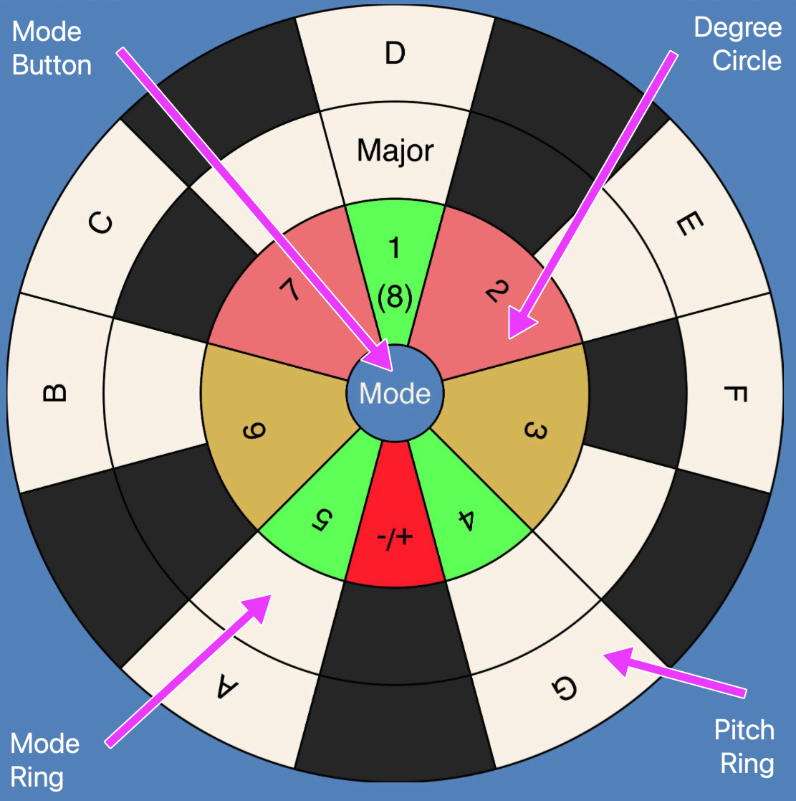

Music SR Instructions
(under construction)
Anatomy

Basic Operation
Tap/Click once to rotate by one sector.
Select a particular circle or tap/click in
the background to rotate the entire unit.
To paraphrase the caterpillar, one side makes it go
clockwise, the other makes it go counterclockwise.
Uses
Contruct Scales
Measure Intervals
Transpose Between Keys
Identify Relative Major & Minor Keys
Identify Key Signatures ???